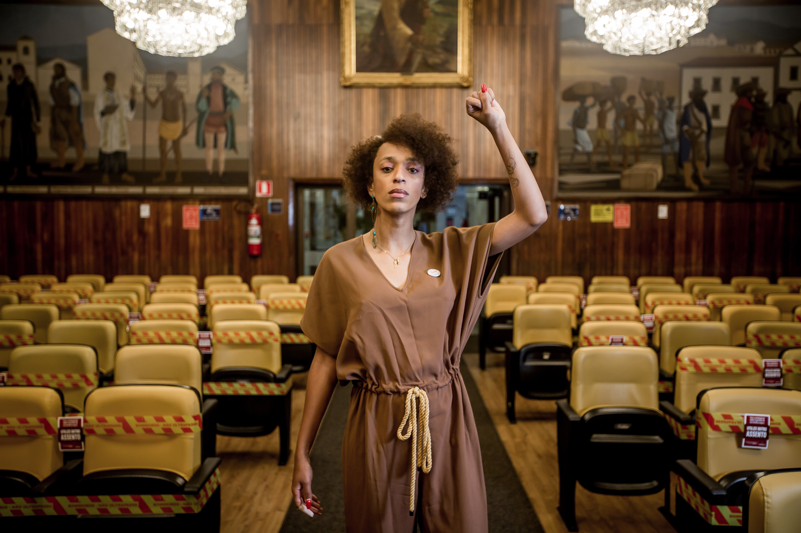
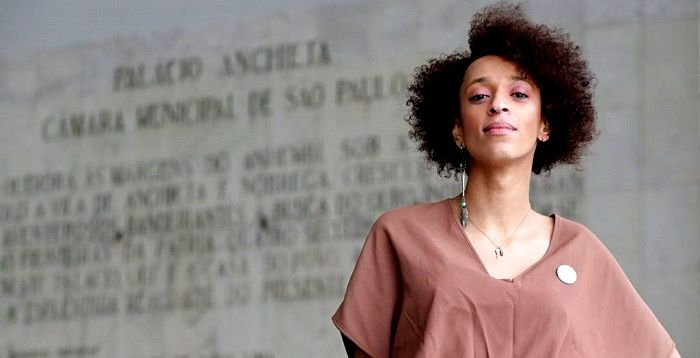

Sua História
Erika nasceu na cidade de Franco da Rocha e cresceu na periferia de Francisco Morato, municípios da Região Metropolitana de São Paulo.
Aos quatorze anos, se mudou com a família para Itu, no interior de São Paulo.
Quando adolescente, vivendo com seus tios evangélicos, sofreu violência por sua expressão de gênero, sendo forçada a frequentar a Igreja, em busca de uma "cura" vinda de Deus.
Aos quinze anos, foi expulsa de casa e foi morar na rua, onde recorreu à prostituição para sobreviver.
Após seis anos, foi resgatada por sua mãe e com seu apoio, retomou os estudos.
Concluiu o ensino médio e ingressou na Universidade Federal de São Carlos (UFSCar), onde iniciou, sem concluir, os cursos de pedagogia e gerontologia.
No contexto da UFSCar, ingressou no movimento estudantil, pontapé inicial para a carreira política que viria a consolidar.

Carreira política
Iniciou sua carreira política em 2015, após uma disputa com uma empresa de ônibus.
Na ocasião, ao tentar comprar uma passagem de ônibus em Itu, a empresa se recusou a imprimir seu nome social feminino na passagem.
A legislação em São Paulo que garante direitos de identidade às pessoas trans não se aplicava a empresas privadas.
Hilton lançou petições online defendendo o direito de pessoas trans usarem seus nomes sociais.
Após grande engajamento, Hilton acabou obtendo êxito.
Com a repercussão do caso, Hilton ganhou reputação de defensora dos direitos dos trans e começou a receber convites para dar palestras em universidades.
Com isso, foi convidada a se filiar ao PSOL em 2016.
Em 2020 se candidatou para vereadora em São Paulo. Foi eleita com 50.508 votos, se tornando a vereadora mais votada do Brasil e a primeira mulher trans a ocupar uma cadeira na Câmara Municipal de São Paulo.

Em 2020, Erika foi uma das duas primeiras mulheres trans a se elegerem para deputada federal, ao lado de Duda Salabert, que se elegeu no mesmo ano, representando Minas Gerais.
Em seus projetos de lei, Erika Hilton tem como prioridade as temáticas relacionadas à preservação dos Direitos Humanos, o combate à fome, a defesa da saúde pública e gratuita, bem como o foco nas políticas públicas para a população LGBTQIA+.

Dentre os projetos de lei propostos, cita-se a aprovação da Lei que criou o Fundo Municipal de Combate à Fome com o objetivo de financiar políticas públicas de segurança alimentar na cidade.
Erika também é a responsável pela aprovação da Lei que criou o “Dia Municipal pela Vacinação e em Defesa das Trabalhadoras da Saúde.
No seu primeiro ano de mandato, Erika Hilton propôs aproximadamente 116 projetos de lei, tornando-se a parlamentar com a maior produção de propostas legislativas da Câmara de SP.
Erika Hilton foi eleita e reeleita, por unanimidade, a presidente da Comissão Extraordinária de Direitos Humanos e Cidadania.
Com a sua eleição para o cargo, tornou-se a primeira representante do PSOL a presidir uma Comissão na cidade de São Paulo e uma das primeiras pessoas trans a conseguir o feito no Brasil.